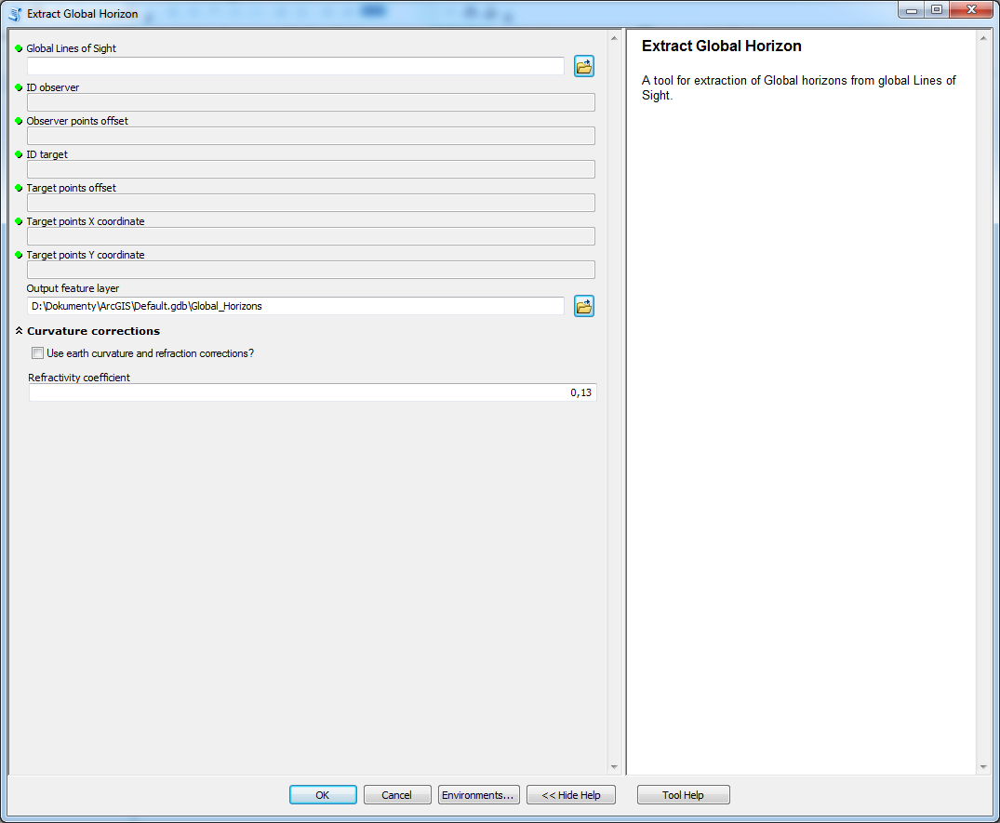

Extract Global Horizon
used to extract visible global horizon from global LoS
Description
A tool used to extract visible global horizon from global LoS.
Tool parameters
| Parameter name | Parameter type | Description |
|---|---|---|
| Global Lines of Sight | features - lines | layer containing LoS. |
| ID observer | Short | field of the layer Lines of Sight that has data type Short. If the field has default name (OID_OBSERV) from tools in this toolbox then it is selected automatically. |
| Observer points offset | field - double | field of the layer Lines of Sight that has data type Double. If the field has default name (observ_offset) from tools in this toolbox then it is selected automatically. |
| ID target | Short | field of the layer Lines of Sight that has data type Short. If the field has default name (OID_TARGET) from tools in this toolbox then it is selected automatically. |
| Target points offset | field - double | field of the layer Lines of Sight that has data type Double. If the field has default name (target_offset) from tools in this toolbox then it is selected automatically. |
| Target point X coordinate | field - double | field of the layer Lines of Sight that has data type Double. If the field has default name (target_x) from tools in this toolbox then it is selected automatically. |
| Target point Y coordinate | field - double | field of the layer Lines of Sight that has data type Double. If the field has default name (target_y) from tools in this toolbox then it is selected automatically. |
| Output feature layer | features - points | output layer. |
| Use earth curvature corrections? | boolean | should Earth's curvature and refraction corrections be used? |
| Refractivity coefficient | numerical value | coefficient value (default 0.13). |
Parameters Use earth curvature corrections? and Refractivity coefficient in parameter group Curvature corrections.
Outputs
Point feature class containing horizons, that has Z-dimension. The feature class has fields that allow connection with observer points (OID_OBSERV), target points (OID_TARGET) and also LoS (OID_LoS).
Besides that there are several attributes of horizons:
| Field name | Field type | Description |
|---|---|---|
| Hide_Tar | Short | value indicating if the horizon hides target (1) or if the target would be visible behind this horizon (0). |
| ViewAngle | Double | vertical viewing angle from observer to the horizon. Units are degrees. |
| AngleDiff_Tar | Double | angle difference between viewing angle of this horizon and target point. |
| Behind_Tar | Short | value indicating if the horizon is behind target (1) or before target point (0). |
Tool screenshot
